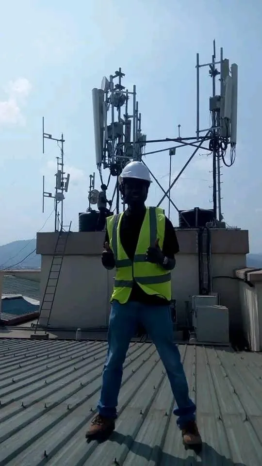
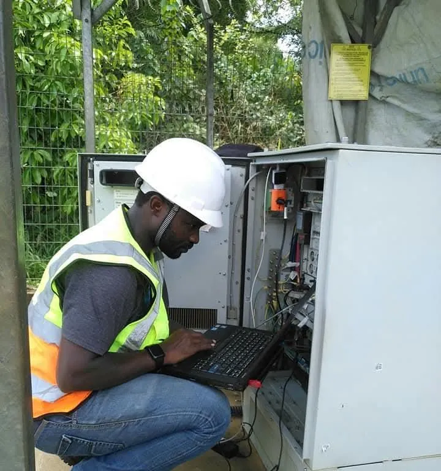
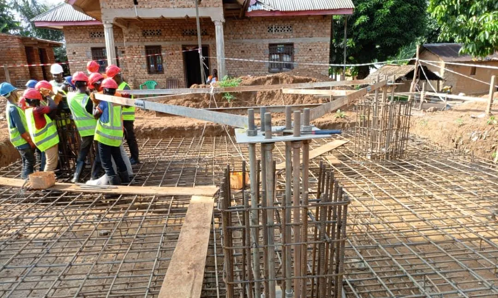

Une société créée pardes ingénieurs développeurs
IT CONSULTING SARL réunit des concepteurs programmeurs autour d’un même objectif : apporter des solutions fiables et durables aux problèmes liés aux nouvelles technologies et à la communication.

Qui nous sommes
IT CONSULTING SARL est une société créée par de jeunes ingénieurs développeurs d’applications (concepteurs programmeurs). Sa raison d’être, telle que la formule son profil, est de pallier les problèmes rencontrés avec la nouvelle technologie et la communication, et d’y apporter des solutions fiables et durables.
Entreprise de droit congolais, elle a son siège social en République démocratique du Congo, à Goma, et dispose aujourd’hui d’autres représentations en Ouganda, au Soudan du Sud et au Rwanda. Elle est enregistrée au Registre du Commerce et du Crédit Mobilier sous la référence CD/GOM/RCCM/18-B-0676.
Son expérience s’étend à six domaines : télécommunication, réseaux informatiques, sécurité électronique, audit informatique, imprimerie, et formation en nouvelles technologies et multimédia. Cette combinaison est rare : elle permet de traiter un projet de bout en bout, du diagnostic à l’installation, de la maintenance à la formation des utilisateurs.
Repères chronologiques
Deux dates figurent dans le profil. Nous les présentons telles quelles, sans les confondre.
- 2016Début de l’expérience dans les domaines de la télécommunication, des réseaux, de la sécurité électronique, de l’audit informatique, de l’imprimerie et de la formation, d’après le profil de l’entreprise.
- 25 janvier 2018Création de la société à responsabilité limitée. Immatriculation au Registre du Commerce et du Crédit Mobilier : CD/GOM/RCCM/18-B-0676.
- Aujourd’huiSiège à Goma ; représentations mentionnées en Ouganda, au Soudan du Sud et au Rwanda.
Fiche d’identité
- Dénomination
- IT CONSULTING SARL
- Forme juridique
- Société à responsabilité limitée
- Date de création
- 25 janvier 2018
- Registre du Commerce et du Crédit Mobilier
- CD/GOM/RCCM/18-B-0676
- Siège social
- N° 022, Avenue Les Messagers, Quartier Le Volcan, Commune de Goma, Ville de Goma, province du Nord-Kivu
- Représentations
- Ouganda, Soudan du Sud, Rwanda
- Site web
- www.itconsultinggroup.net
- contact@itconsultinggroup.net
info@itconsultinggroup.net
Une référence régionale
Être la meilleure entreprise de prestation de services dans les domaines de la PTNTIC (Postes, Télécommunications et Nouvelles Technologies de l’Information et de la Communication) en République démocratique du Congo en particulier et en Afrique en général. Être la référence dans la sécurité électronique.
Un travail sans rupture
Apporter à nos partenaires un support technique efficace, en temps réel, pour leur permettre de travailler sans interruption et avec moins de pertes liées aux dysfonctionnements.
Notre manière de travailler
Écoute et formalisation
Nous vous écoutons et participons à la formalisation de vos besoins. Nos démarches s’adaptent à l’évolution de votre demande.
Solutions sur mesure
Des propositions personnalisées et pragmatiques, adaptées à vos contraintes et à vos objectifs plutôt qu’un catalogue figé.
Fiabilité et durabilité
L’engagement fondateur de la société : des solutions fiables et durables aux problèmes liés aux technologies et à la communication.
Support technique
Un support technique efficace, en temps réel, pour que vos équipes puissent travailler sans rupture.
Sur le terrain
Photographies extraites du profil de l’entreprise.



Travaillons ensemble
Présentez-nous votre projet ou votre problème technique : nous vous répondrons avec une proposition adaptée.